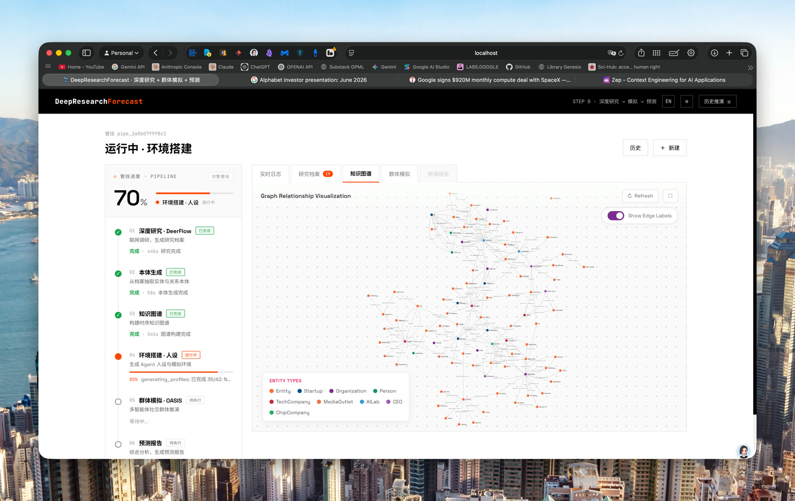
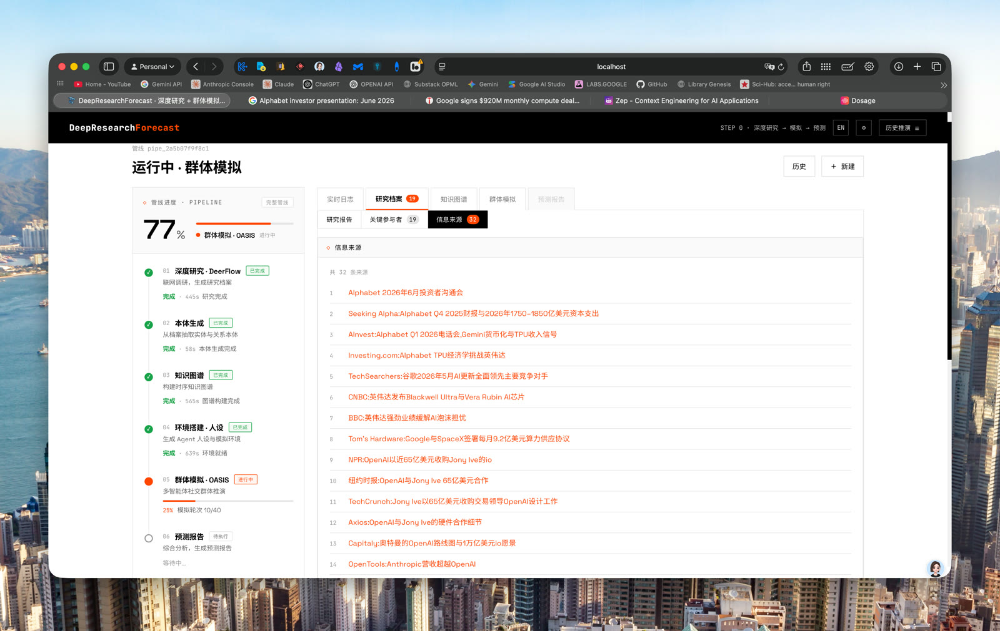
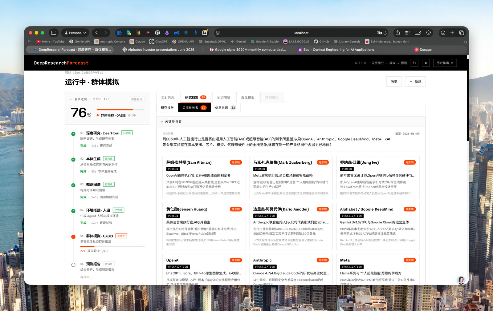
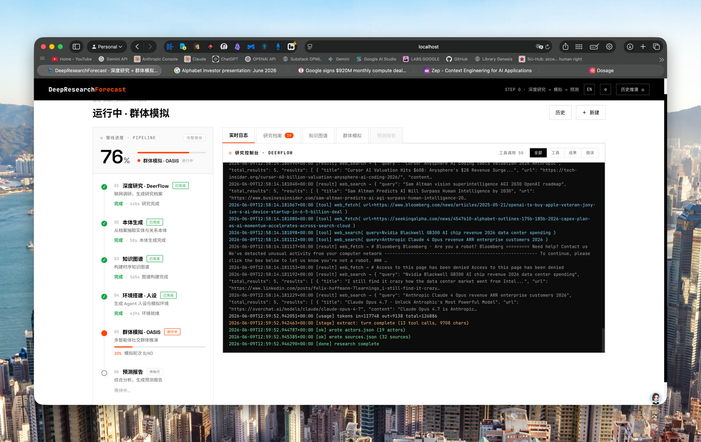
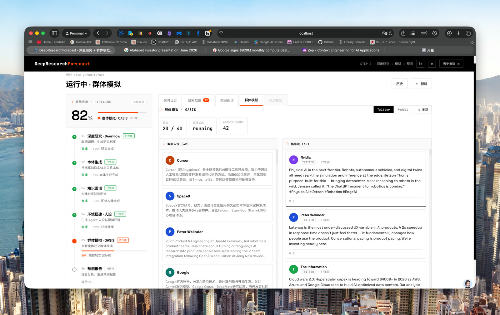
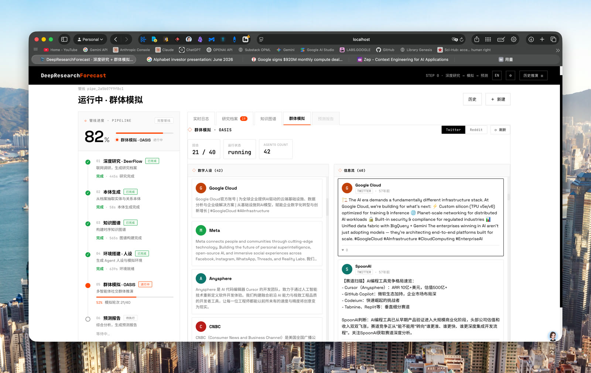

A deep-research agent (DeerFlow) searches the web and builds an evidence-grounded dossier; the system constructs a temporal knowledge graph (Zep), generates digital personas for the real-world actors it found, runs a multi-agent population simulation (OASIS, dual-platform), and a report agent synthesizes the forecast. The pages below show every stage of real runs, unedited.
Each card is one full pipeline run. Click through to walk the whole workflow: deep-research log → research dossier → ontology → knowledge graph → simulated forum → final forecast.
“预测到2030年，哪家美国人工智能实验室或企业将成为美国AI领域竞争的主导者……”
Walk through the run →“预判2035年前全球电动汽车产业的发展趋势：技术路线演进、产业链竞争格局、各国政策走向……”
Walk through the run →“How and when will the Russia–Ukraine war end? Research the current state of the conflict…”
Walk through the run →One prompt → research console → knowledge graph → live simulation feed → forecast.






# run it yourself — free-tier Zep key + a Claude/Codex CLI login is all you need
git clone https://github.com/linroger/DeepResearchForecast.git
cd DeepResearchForecast && ./setup.sh
npm run dev # → http://localhost:3000/research